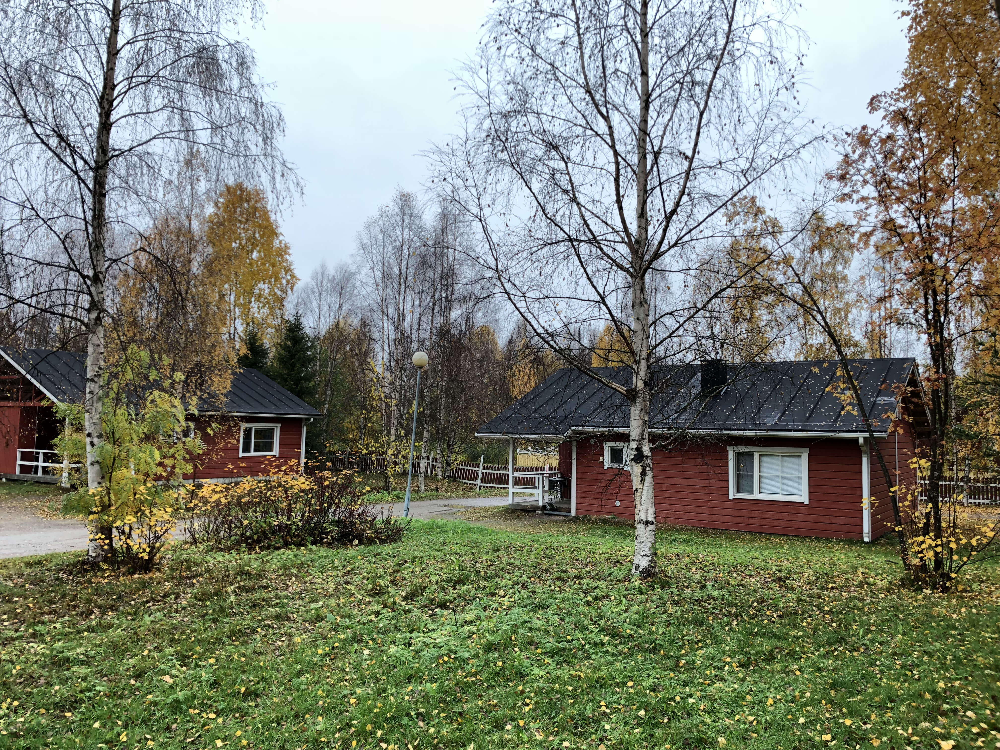
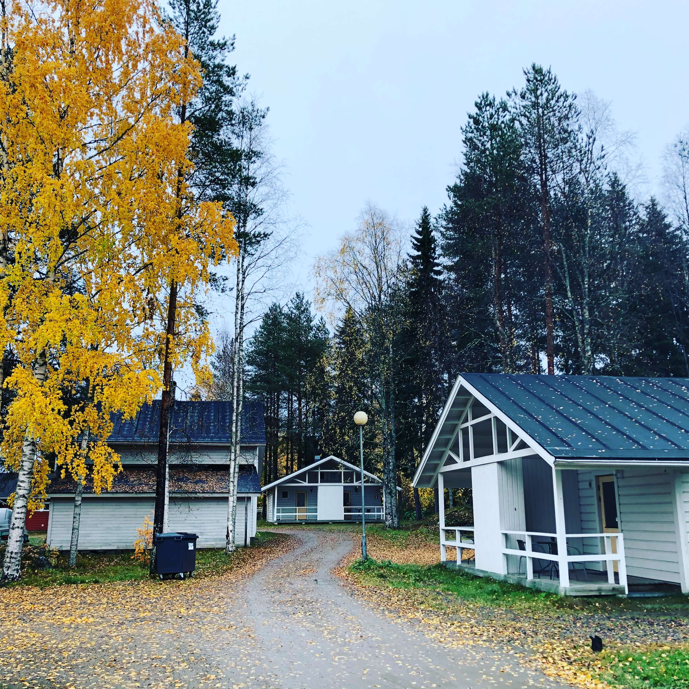
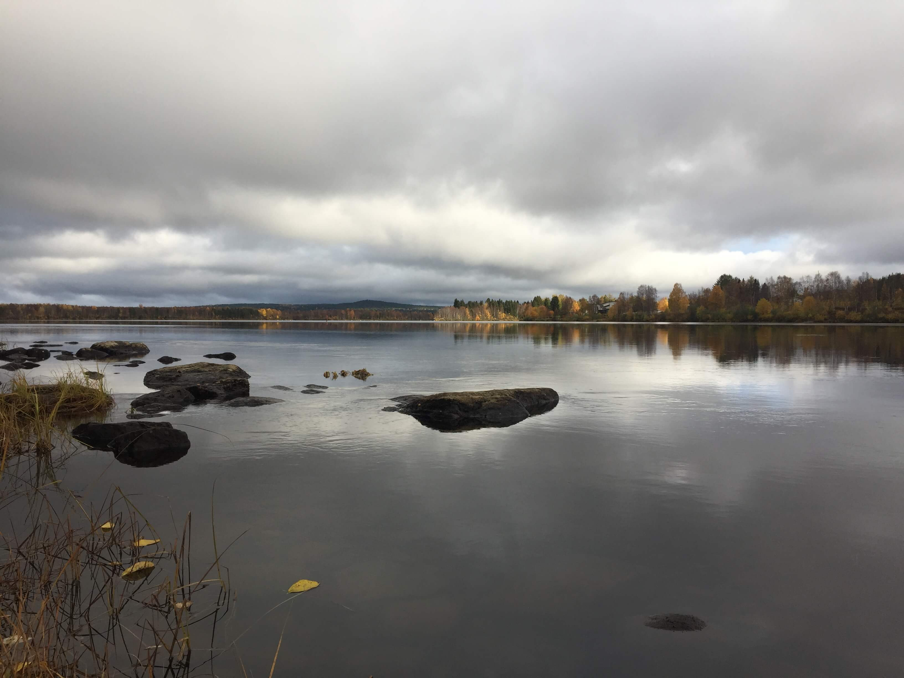
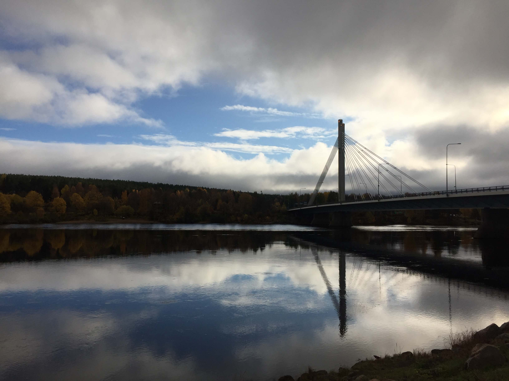
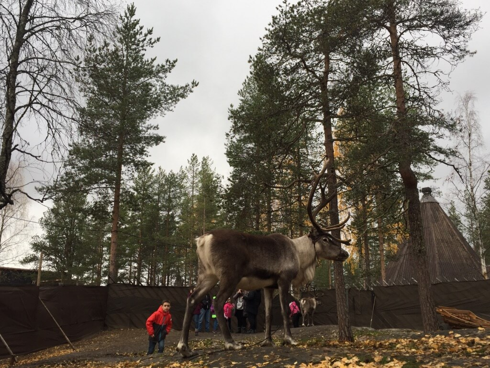
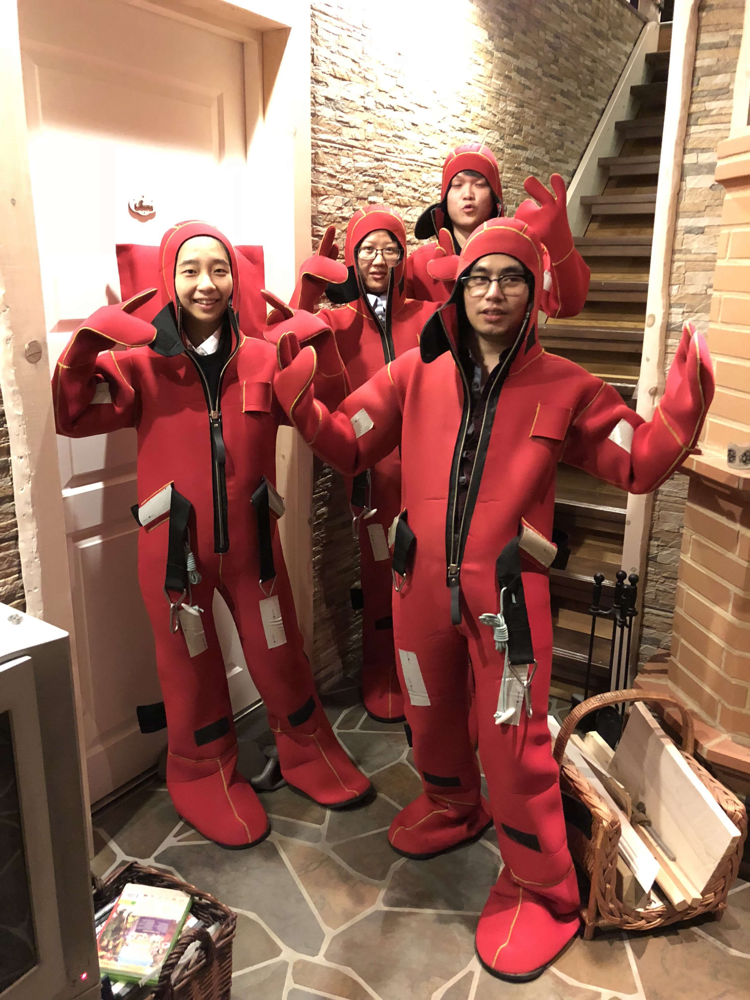
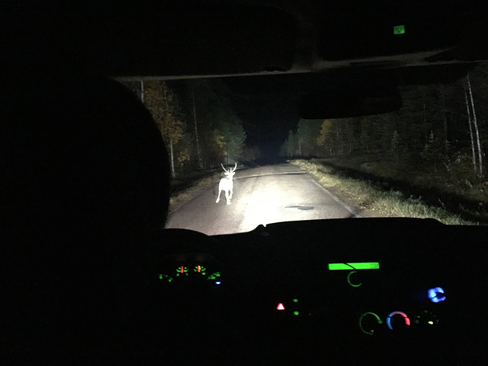
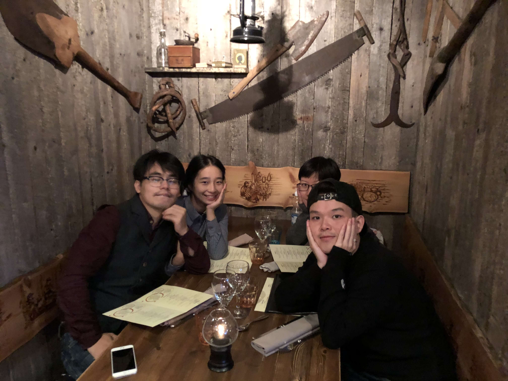
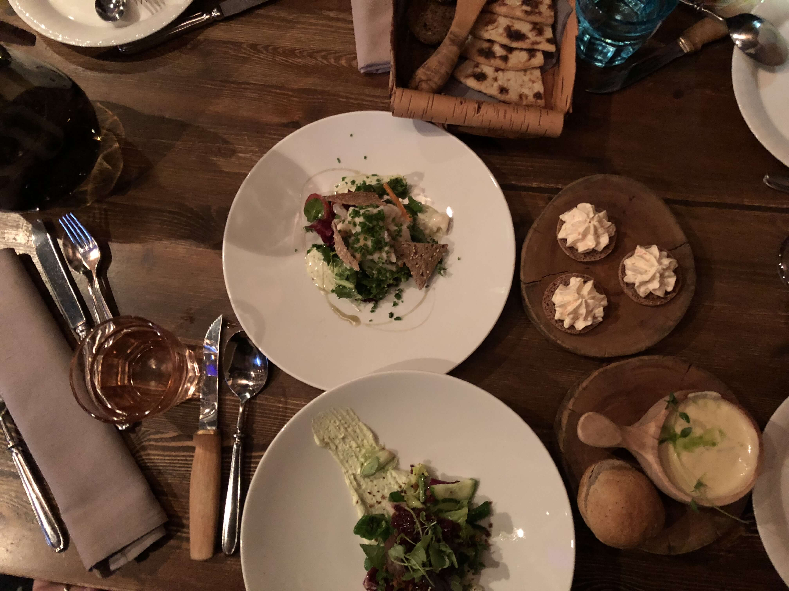
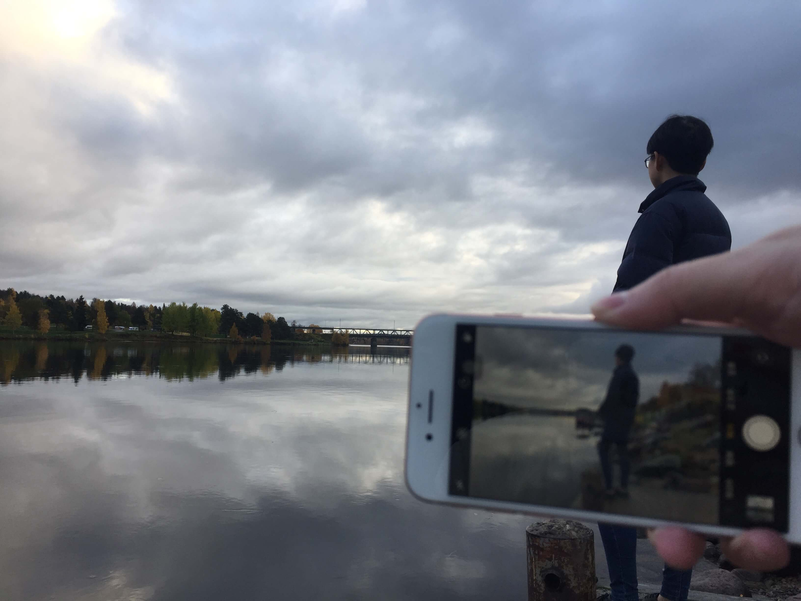

赫尔辛基到罗瓦涅米飞机只有一个小时十五分钟，机场也很小。机场里到处都是租车公司的柜台，由此可见，罗瓦涅米的公共交通实在是够呛，可惜当时的我并没有意识到这一点。

租住的小木屋。

此行定的住宿是河边山上的小木屋度假村。距离城里走路大概四十分钟。度假村里是一栋栋规整的红色、白色的小木屋，木屋里配置了桑拿房，这是最开心的地方啦。桑拿来自单词Sauna的音译，意译的话就是芬兰浴。给桑拿设定温度，新手建议就是六十度了，待温度达到之后，冲个热水澡，保持皮肤湿润就可以去蒸啦。在昏暗密闭的小木屋里，默默的闭上眼思考人生，或者通过屋顶上的小窗户仰望星空，舀上一勺水，往滚烫的桑拿石上一浇，蒸腾的热气从上而下的包裹住自己。待毛孔完全蒸开之后，当地人就会跳湖啦，没错，跳湖～这传统的习俗据说有利于保持肌肤的弹性，收紧毛孔，在赫尔辛基的码头边就有一个营业的桑拿房，由于码头边只有海没有湖，他们就在外面修了一个游泳池，坐在码头边的我们就看见偶尔有蒸得全身通红的人，一头扎进冰冷的泳池里。我们倒是没有湖可以跳，当然也不敢效仿，所以就去冲了个温水澡作为蒸桑拿的完美结束。

到罗瓦涅米的时节并不算好，没有雪也没有极光，天也阴，旁边的滑雪场还是那么寂寞冷清。山上的树木除了松树大多已经黄了，但还没有彻底落叶，沿着河岸散步，可以看见远处平静的河流和倒映在水中层层叠叠深深浅浅的树影，不用任何艺术加工，就是天然的油画了。过了短暂的夏天，小艇都歇息了，反扣在岸边的船坞中。沿着河走了大概四十分钟走到了城里，这个城市太小了，就那么一条主干道，道上有一家号称地球最北的麦当劳，啃着汉堡薯条炸鸡翅，看着旁边的中国游客三三两两，来来回回。

圣诞老人村是罗瓦涅米旅游景观的推荐Top1。由于季节不应，村里只有寥落的几栋度假木屋，以及开门营业然而没有客人的餐厅，没有雪和灯的赭红色木屋在阴天里显得沉闷而单调。圣诞老人的办公室朝十晚五，中午还带午休。由于此时处于国庆假期的关系，等待会见圣诞老人的队伍里大多是中国游客。圣诞老人会和你聊三五句天，比如从哪里来，做什么工作，别的没有了，然后就是和圣诞老人拍个合照盖个戳。整个过程不过十分钟，然而合照是真的略有点昂贵。圣诞老人别的看不出来，倒是身高至少两米，体型巨大，让我突然感觉到了第一次面对猎场看守海格的哈利波特的心情。村里有一个北极圈标线，两个巴掌宽的白线标示的纬度，在此处自拍是需要眼明手快并且具备见缝插针的技巧。

驯鹿。圣诞老人村里有驯鹿农场，给圣诞老人拉雪橇的就是它的老表们。当然还有鹿肉罐头。
此行的精华体验是预定了一个冰水漂浮的项目。晚上八点，旅行社就派人来接，一个台湾的姑娘和一个日本姑娘，看着都是留学生的样子，20岁上下。日本姑娘带队另外两个日本游客去做桑拿项目，台湾姑娘就带我们几个去浮冰。

瞬间变身天线宝宝的浮冰套装。
所谓浮冰就是穿着特制的服装，慢慢走到湖边，仰面倒下去，人就浮在水上。由于我向来是个遇水就沉的旱鸭子，此时是首次没有干扰的平静的感受到水的力量，柔和却坚定，这晚是中秋，本以为是阴天，云层很厚会看不到月亮，结果偏偏是月亮前的那片云散开了，有诗云星垂平野阔，月涌大江流，此时虽看不见星辰不太应景，但月圆且明亮，垂得特别低，几近落入宽阔的湖面上。湖边寥寥燃起了一二篝火，愈发显得夜里寂静，久在城市的喧嚣中太难感受到这种野趣了，仿佛可以挣脱出来触碰到自由。我就那么一动不动，随波逐流，仰面漂浮着，就觉得思维也安静下来了，以往常常涌动的不安定的思绪，也暂时清空了出去，并不觉得困，但是不想说话，此刻永恒。然而漂浮了半小时不到，导游小姑娘在篝火边给我们准备了蓝莓茶，用签子串起香肠和棉花糖，让我们自己在火里烤，虽然东西不多，但是滋味却不坏。

回程的时候已近夜里一点，要是国内就已经清晨了，大家迷迷糊糊中车子来了一个急刹。我们居然碰上了野生的驯鹿群，那白白的屁股，毛茸茸的短尾巴真是一个小惊喜。车子再次发动，鹿群散去，但有一只傻瓜鹿一直不知避让，就那么一蹦一蹦的堵在车前，让人哭笑不得。

在临走前最后的晚餐，我们去了一家在Trip Advisor上颇具声望的拉普兰特色餐厅——Nili。不得不说装饰充满了野性，墙上是有使用痕迹的旧锯子，锤子让我有种林中木屋之类恐怖电影的既视感。

Nili的食物非常具有当地特色，煎驯鹿肉排，烤三文鱼都很不错。只是这天只能在限定套餐里选择，不能点餐有些不尽人意。

唯一不满的是甜点实在是太甜了。
The End
❤︎
